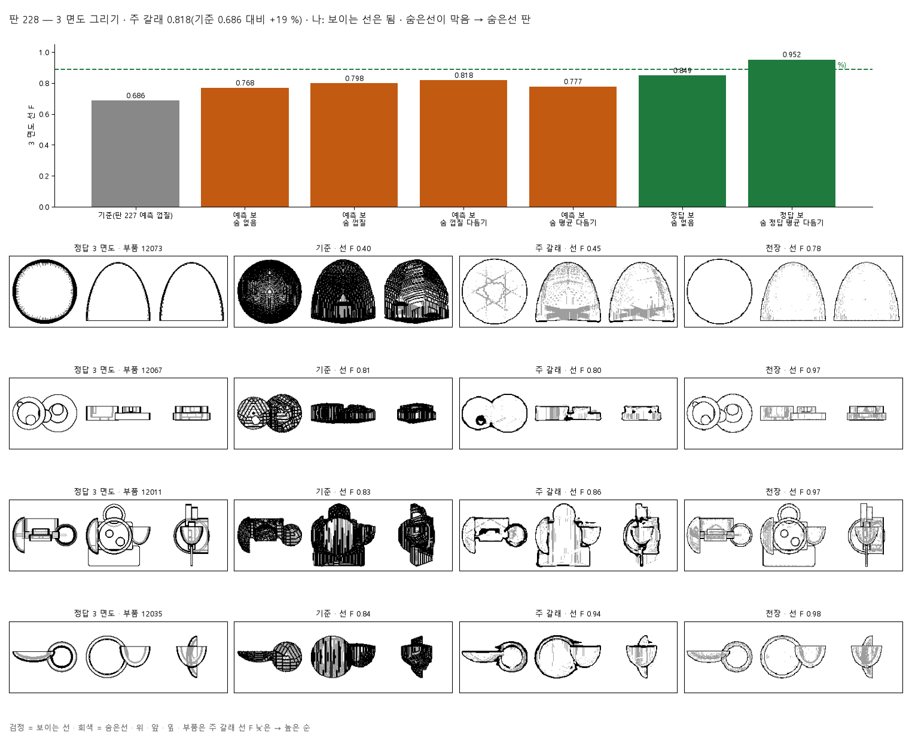

m1_tr0228_h000_삼면도그리기
3 면도의 보이는 선을 위 · 앞 · 옆 선 지도에서 바로 가져오고 숨은선만 다듬은 합친 3D 에서 그리면, 예측 3 면도 선 F 가 30 % 오르나(0.686 → 0.89)?
판정 · 나 — 주 갈래(예측 보 + 숨 껍질 다듬기) 0.818(기준 0.686 대비 +19 % · 목표 0.89 못 미침) · 보이는 선 F 0.608 → 0.884 · 숨은선 F 0.380(정답 길 0.650) · 천장(정답 보 + 정답 숨) 0.952 · 정답 보만 0.849 → 숨은선 판(반대쪽 시점 선 지도로 숨은선)
분석
한 줄로
물음: 3 면도의 보이는 선을 위 · 앞 · 옆 선 지도에서 바로 가져오고 숨은선만 다듬은 합친 3D 에서 그리면, 예측 3 면도 선 F 가 30 % 오르나(0.686 → 0.89)?
답: 19 % 올랐다(0.686 → 0.818 · 결정 표 「나」). 보이는 선은 선 지도에서 바로 가져오니 0.608 → 0.884 로 크게 올랐다. 목표에 못 미친 몫은 숨은선이다. 합친 메시에서 그린 숨은선이 회색 빗금으로 남는다(숨은선 F 0.38 · 정답 길 0.65).
왜 이 판을 했나
tr227 에서 합친 메시의 꺾임으로 3 면도를 그리면 칸 계단마다 선이 그어져 빗금이 됐다(정답 지도로도 0.775). 사용자 목표는 「3 면도까지 · 성능 30 % 끌어올리기」 다. 정답 B-rep 의 위 · 앞 · 옆 선 지도를 3 면도 틀로 옮기면 정답 3 면도 보이는 선과 0.992 로 같아서, 보이는 선은 선 지도에서 바로 가져오기로 했다.
바꾼 것 하나
3 면도를 그리는 길만 바꿨다. 보이는 선 = 위 · 앞 · 옆 시점 렌더를 tr226 망에 넣어 뽑은 모서리 ∪ 윤곽 지도. 숨은선 = 9 시점 합친 메시(같은 틀 · 다시 맞추지 않음)에서 그린 숨은선(보이는 선 자리는 뺌). tr227 과 같은 tr182 시험 98 부품이다.
결과

| 98 부품 | 3 면도 선 F | 보이는 선 F | 숨은선 F |
|---|---|---|---|
| 기준(tr227 예측 껍질) | 0.686 | 0.608 | 0.356 |
| 예측 보이는 선만 | 0.768 | 0.884 | — |
| 예측 보 + 숨(껍질) | 0.798 | 0.884 | 0.341 |
| 예측 보 + 숨(껍질 다듬기 · 주 갈래) | 0.818 | 0.884 | 0.380 |
| 예측 보 + 숨(평균 합침 다듬기) | 0.777 | 0.884 | 0.365 |
| 정답 보이는 선만 | 0.849 | 0.985 | — |
| 정답 보 + 숨(정답 합침 다듬기 · 이 길 천장) | 0.952 | 0.985 | 0.650 |
왜 이렇게 나왔나
확인한 것
- 보이는 선은 풀렸다. 예측 0.884 · 정답 0.985 로, 3 면도의 보이는 선은 그 방향 선 지도 그대로다.
- 숨은선이 막는다. 정답 보이는 선만으로는 0.849 인데, 정답 숨은선을 보태면 0.952 다. 예측 쪽 숨은선(껍질 · 다듬기)은 0.818 까지만 올린다. 그림에서 숨은선이 회색 빗금이다. 껍질 메시 안쪽 계단 꺾임이 숨은선으로 그려진다.
- 깊이를 넣은 합침(평균)은 숨은선에서도 껍질보다 못하다(0.777 대 0.818).
짐작 (아직 확인 안 함)
- 3 면도의 숨은선은 대부분 반대쪽에서 보이는 선이다(위에서 숨은 모서리는 아래에서 보인다). 반대쪽 시점(아래 · 뒤 · 반대 옆)의 선 지도를 뒤집어 쓰면, 합친 메시 없이 숨은선도 선 지도로 그릴 수 있다.
한계
- 축 시점(고도 0 · 90)은 학습 렌더 고도(5 ~ 40)에 없었다. 그래도 보이는 선 0.884 다.
- 다듬기는 타우빈 30 번 하나만 썼다.
- 카드 YAML 오류(까닭 줄의 콜론)로 첫 실행이 카드 검사에서 멈춰, 고쳐 다시 돌렸다(제 실수).
배운 것과 다음
보이는 선은 선 지도에서 바로 가져오면 풀린다(0.884). 남은 것은 숨은선이다. 합친 메시에서 그리면 빗금이 된다.
- (결정 표 「나」) 숨은선 판 — 숨은선을 반대쪽 시점 선 지도로 그린다(위 ↔ 아래 · 앞 ↔ 뒤 · 옆 ↔ 반대 옆). 먼저 정답 선 지도로 이 길의 천장을 재고, 예측으로 잰다.
- 목표 0.89 까지 남은 몫은 0.07 이다.
판 기록
- 카드 · 코드 커밋 aba2250(돌리기 전) · 축 지도 2 분 · 도면 4 분 · 판정 잼.json · 그림 그림.png · out/설명/캐드부품/모델228/(git 밖).